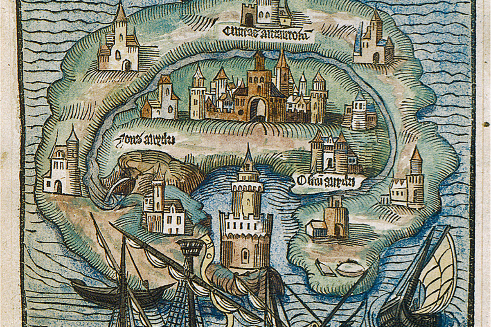
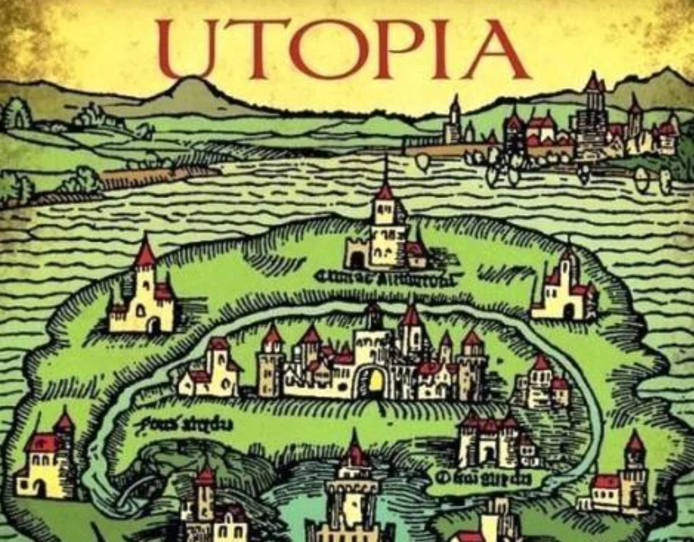

Томас Мор — выдающийся английский мыслитель, писатель-гуманист и политик. Он был ярым противником Реформации и отказался признавать Генриха VIII главой созданной им Англиканской церкви. За свои убеждения Мор заплатил высокую цену: его казнили в 1535 году.
Самым известным его трудом стала «Утопия», в которой он изобразил идеальную систему функционирования государства и общества.Первая часть «Утопии» является литературно — политическим памфлетом. В этой части Мор критикует сложившиеся
общественно-политические порядки своих современников, такие как: смертная казнь (философ выступает против нее), королевский деспотизм и военная политика, также он насмехается над развратом духовенства.
 Основной частью «Утопии» является вторая. В ней описывается островное государство Утопия, являющееся федерацией 54 городов. Во главе государства стоит «мудрый монарх». Сами жители
государства являются такими же ярыми гуманистами, как и сам Томас Мор.
Утопийцы обязаны трудиться несмотря на пол и возраст.Помимо земледелия, каждый утопиец занимается определенным ремесло: работа по металлу или дереву, работа
с шерстью или льном и т. д. Подрастающий утопиец, по обыкновению, перенимает ремесло своего отца. Но, если он захочет сменить вид деятельности, ему заботливо подыщут новую семью с подходящим ремеслом.
 Утопицы работают всего 6 часов в день. Важная особенность этого государства — отсутствие у утопийцев частной собственности. К преступникам согражданам утопийцы относятся строже, чем
к рабам из других государств.
В Утопии существует религиозное разнообразие: кто-то верит в Бога, кто-то верит в Луну и т. д. Утопийцы считают, что справедливая причина для войны — это ситуация, когда кто-то владеет территорией
и не пользуется ей, но и не собирается отдавать ее в пользования другим государствам.
Города утопийцев состоят из больших семей — от 10 до 16 взрослых. В городе проживает где-то 6000 таких семей. Каждая занимается своим ремеслом.
Позже, произведенные ручным трудом товары, они несут на рынок и отдают. А взамен берут то, что нужно им, только в необходимых размерах.
Важным для утопийцев условием жизни является классовая подвижность: в Утопии нет четких делений.
Существует как восходящая, так и нисходящая классовая подвижность. Таким образом, в своем произведении Томас Мор мрачной картине жизни европейских государств противопоставляет описание идеального государства на острове Утопия. Он не
считал свою идею невозможной, но признавал, что она очень трудна для достижения.